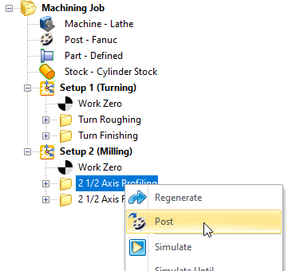

|
<< Click to Display Table of Contents >> Navigation: RhinoCAM FAQs > Post-Processing > How to: Locate & send you my Post Definition File? |
There may be times when you ask us to perform a customization on your post-processor. To do this we may ask you to send us your current post-processor file. Follow the steps below to locate your current post-processor file.
1.Run your CAM product and load one of the CAM modules such as MILL, TURN, Profile-NEST, etc.
2.From the Machining Browser, select the Program tab.
 MILL Module, Machining Browser, Program Tab |
3.From the Program tab select the Post option.
4.From the Set Post-Processor Options dialog, under the Select Post-Processor section look for "Folder where post-processor files are located:".
Set Post-Processor Options Dialog |
5.You want to copy the folder path that is located in this field. Using a mouse left-click, start from the left and draft to the right to highlight all of the folder location data. Alternatively, just place the mouse cursor anywhere in this filed and use <Ctrl>+A to select all of the path data and then right-click and select Copy. This will add the folder path to your windows clipboard.
6.Now open a new File Explorer folder and highlight and paste the post-processor folder path into the filed at the top of the folder dialog and them press enter. The File Explorer Folder dialog will navigate directly to the folder where your post-processor definition file is located.
File Explorer Folder with *.spm post definition files located |
7.All post-processor files have a file extension of *.spm. Look through the files in this folder and locate the file with same name as the post that you have selected in the "Current Post-Processor" field of the Set-Post-Processor Options dialog.
8.With the spm file located, select it and copy or drag the file into your email program and attached it to a new email.
9.Now send the email to support@mecsoft.com.